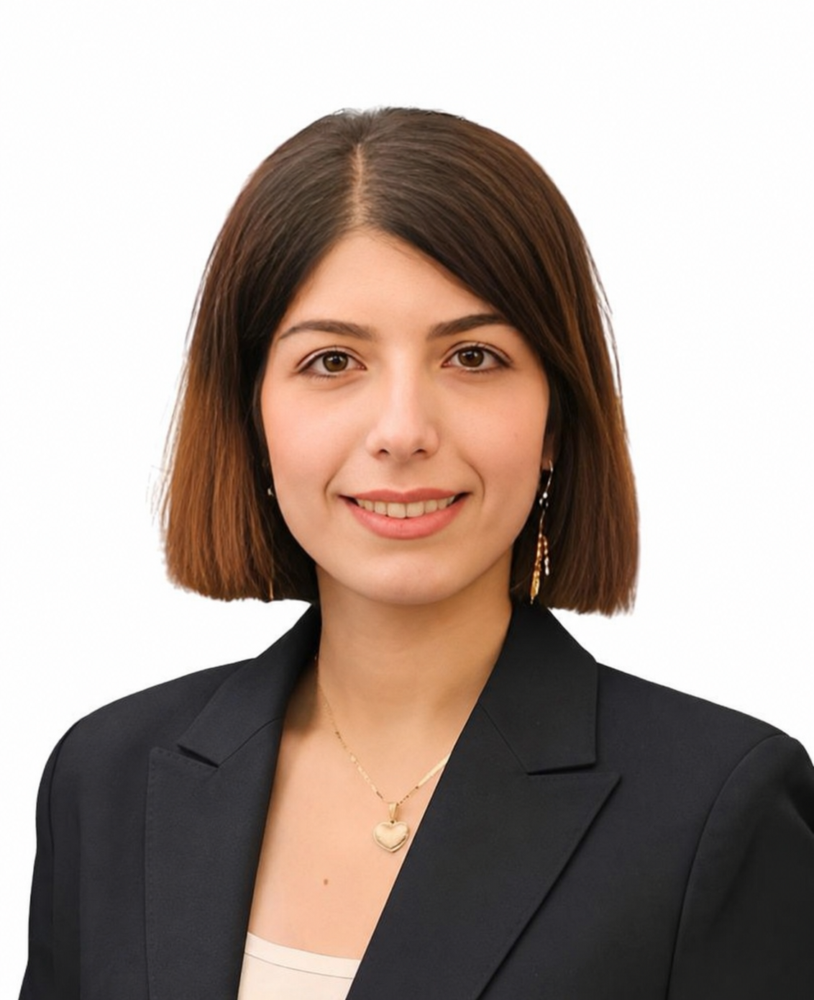

People
Principal Investigator

Niloufar (Nila) Alipour Talemi
Assistant Professor
School of Computing
Utah State University
Email: nila.alipourtalemi@usu.edu
Open Positions
Open Position
Ph.D. Student
We are looking for motivated Ph.D. students interested in computer vision, multimodal learning, vision-language models, and foundation models. Please contact us to learn more.
Open Position
Master's Student
We welcome Master's students interested in research on visual intelligence, multimodal AI, and real-world machine learning applications. Please contact us to learn more.
Open Position
Undergraduate Researcher
Undergraduate students interested in gaining research experience in AI, computer vision, and multimodal learning are encouraged to reach out. Please contact us to learn more.
Prospective Students
AIM Lab is actively recruiting motivated students interested in computer vision, multimodal learning, and vision-language models. Lab members will have opportunities to work on cutting-edge research, publish in top-tier venues, collaborate with leading researchers, and contribute to impactful real-world applications across diverse domains.